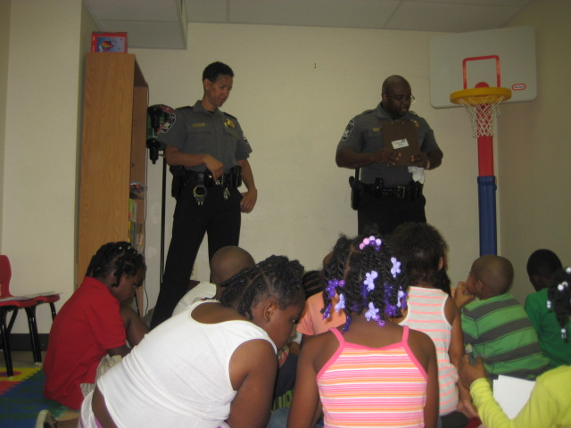
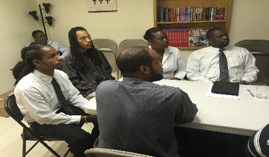
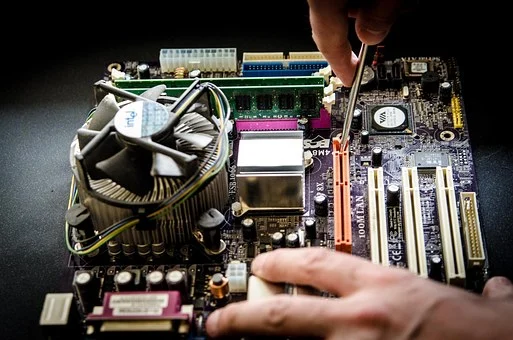

Both volunteering and working with Urban Ed, Inc. can be a very rewarding experience. We are an organization looking for creative people that are committed to making a noticeable change in low-income communities and the individuals that live there. Current volunteer opportunities include:
EXPERT VOLUNTEERING
Bring your and/or your teams skills to Urban Ed! Whatever skillset you have we can use your help. We provide mini workshops, one-day bootcamps and guest speaking opportunities for our IT trainees. These opportunities can be one time or over a series of weeks/months and can include groups of volunteers, up to 12 at a time.
We are open to topics but generally can use help on:
- Artificial intelligence & automation
- AWS solutions architect and dev ops
- Big data
- Cisco networking, we have equipment onsite
- Cybersecurity monitoring & detection tools
- IoT (Internet of Things)
- JAVA basics
- Linux basics
- Python basics
- Coding hands-on
- Gamimg development
- To reserve a speaking date contact Violet Browne, Manager of Administration, at 202-610-2344 or email at volunteers@urbaned.org.
MOCK TECHNICAL INTERVIEW PANELS
Urban Ed over prepares its participants and one of the final steps in their program completion is to be engaged in a mock technical interview. We simulate what an IT interview will feel like to give our students a dose of the real thing. We need 4-6 people at a time and no technology knowledge is needed! We have a bank of questions and welcome HR people, IT people, managers, admin staff, just anyone interested in helping out. There are quarterly opportunities available.
READ TO CHILDREN DURING THE SUMMER MONTHS
Over 87% of our children in the DC area are not reading at proficient by 3rd grade!
During the summer months, Urban Ed needs volunteers to support our TechnoCamp that can start their morning reading to our Lil Bitties! If you can spare 30 minutes of your time during the month of July, please stop by. We have books available at Urban Ed and all you have to do is read, be animated and engage a group of children in the excitement of books and great stories. These opportunities are daily Mon-Thur over 5 weeks during July and the first week of Aug.
HOST FIELD TRIPS
Urban Ed needs government, small businesses and corporate leaders to host our aspiring IT pros at their site. We do this to expose our participants to the "real world of work" and let them explore the excitement of technology up close and personal.
Field trips are an excellent means to interact with our participants, show them the limitless possibilities of technology and science, and inspire them to broaden their thinking.
INTERNSHIPS & JOB SHADOWING
Urban Ed seeks worksites to sponsor a youth during the summer months and possibly beyond for them to apply their IT learning and gain experience. Ideally, the internship will last for at least 2-3 months and be paid. We also seek single day job shadowing opportunities throughout the year as well.
Urban Ed can establish a flexible schedule to accommodate volunteering with us. Employees should check with their employers to see if an Employee Volunteer Program exists in which you can get time off from work to volunteer with Urban Ed. Please give us a call at 202-610-2344 or email us at volunteers@UrbanEd.org to explore any of these rewarding experiences.
If you are:
- Skilled in a particular area and want to share
- Looking for outcomes-driven volunteering, and
- Want to make a difference
Contact us! Groups or individuals. As an individual you can also complete our Volunteer Application online. Urban Ed, Inc.
Volunteers
2041 Martin Luther King Jr Ave., SE
Suite M-2
Washington DC 20020
Email: volunteers@UrbanEd.org